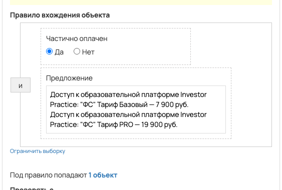

Запуск_ФС_21.10(частичная оплата)
- ID процесса:
2261264 - Объект: Заказы
- Статус: Ожидание событий
- Внутренняя страница: 2261264. Запуск_ФС_21.10(частичная оплата)
- GetCourse: Карточка | Схема процесса
Скриншоты процесса

Коротко для заказчика
- Главное: В процесс попадают заказы по следующим продуктам: «» и «».
- Дальше он передает данные как: Оплаты и заказы.
- Связанных баз Vakas: 1.
Понятное описание процесса
- Процесс работает с объектом GetCourse: Заказы. Текущий статус процесса: Ожидание событий.
- На вход попадают данные так: В процесс попадают заказы по следующим продуктам: «» и «».
- Техническое правило входа в GetCourse: Частично оплачен (да) и Предложение (ID: 7713895, 7713901).
- Дополнительные условия внутри схемы не извлечены: процесс идет напрямую по основной ветке или условия не подписаны.
- Дальше процесс делает прямые вызовы Vakas: 1. Напрямую задействованы базы: 88098.
- Передача: 88098. База 88098: Оплаты и заказы. Передаются параметры:
number,id,order_id,positions,costMoney,leftCostMoney,payedMoney,status,paymentLink,firstNameи другие. - Что происходит в amoCRM: На входе в этап ФИНАНСОВАЯ СВОБОДА -> НОВЫЙ ЗАКАЗ [75957170] база ищет дубль и при необходимости переводит найденную сделку в рабочий этап.
Ход процесса в GetCourse
- Схема состоит из 5 блоков и 7 переходов.
- По типам: стартов 1, условий/ожиданий 0, вызовов URL 3, изменений полей 0, финалов 1.
Блоки процесса: что делают и зачем нужны:
- Блок
39205257«Начало работы» (старт). Что делает: Запускает выполнение схемы для объекта, который попал под правило входа процесса. Зачем нужен: Нужен как точка входа: от него GetCourse начинает движение объекта по схеме. Дальше: если результат «Выполнено», идет в «Вызвать url». - Блок
39205258«Вызвать url» (вызов URL). Что делает: Передает в Vakas: 88098. База 88098, канал «Оплаты и заказы» (POST); параметры:number,id,order_id,positions,costMoney,leftCostMoney,payedMoney,status,paymentLink,firstName,lastName,name,email,phoneи другие; timeout 300 сек. Зачем нужен: Нужен, чтобы передать подходящий объект в 88098. База 88098; дальше На входе в этап ФИНАНСОВАЯ СВОБОДА -> НОВЫЙ ЗАКАЗ [75957170] база ищет дубль и при необходимости переводит найденную сделку в рабочий этап. Дальше: если результат «Ошибка», идет в «n8n fail после Вызвать url #39205258»; если результат «Выполнено», идет в «n8n success после Вызвать url #39205258». - Блок
43525848«n8n success после Вызвать url #39205258» (вызов URL). Что делает: Вызывает внешний URL: testn8n.easydrafting.ru/webhook/gc-vakas-retry-events (POST); параметры:event,clientED,gcDomain,action,process_id,process_name,entity_type,object_id,order_id,user_id,name,email,phone,error_message; timeout 10 сек. Зачем нужен: Нужен, чтобы процесс GetCourse передал данные во внешний сервис testn8n.easydrafting.ru. Дальше: если результат «Ошибка», идет в «Завершение процесса»; если результат «Выполнено», идет в «Завершение процесса». - Блок
39205259«Завершение процесса» (завершение). Что делает: Завершает ветку процесса после выполненных проверок и действий. Зачем нужен: Нужен, чтобы закрыть текущую ветку и не гонять объект по процессу повторно. Дальше переходов нет: это конечная точка ветки. - Блок
43525851«n8n fail после Вызвать url #39205258» (вызов URL). Что делает: Вызывает внешний URL: testn8n.easydrafting.ru/webhook/gc-vakas-retry-events (POST); параметры:event,clientED,gcDomain,action,process_id,process_name,entity_type,object_id,order_id,user_id,name,email,phone,error_message; timeout 10 сек. Зачем нужен: Нужен, чтобы процесс GetCourse передал данные во внешний сервис testn8n.easydrafting.ru. Дальше: если результат «Ошибка», идет в «Начало работы»; если результат «Выполнено», идет в «Начало работы».
Что именно входит в процесс
- В процесс попадают заказы по следующим продуктам: «» и «».
Как именно настроено правило
- Техническое правило входа в GetCourse: Частично оплачен (да) и Предложение (ID: 7713895, 7713901).
Куда и как передается дальше
| База Vakas | Что передается | Этап в amoCRM | Что происходит со сделкой |
|---|---|---|---|
| 88098. База 88098 | Оплаты и заказы | ФИНАНСОВАЯ СВОБОДА -> НОВЫЙ ЗАКАЗ [75957170] | На входе в этап ФИНАНСОВАЯ СВОБОДА -> НОВЫЙ ЗАКАЗ [75957170] база ищет дубль и при необходимости переводит найденную сделку в рабочий этап. |